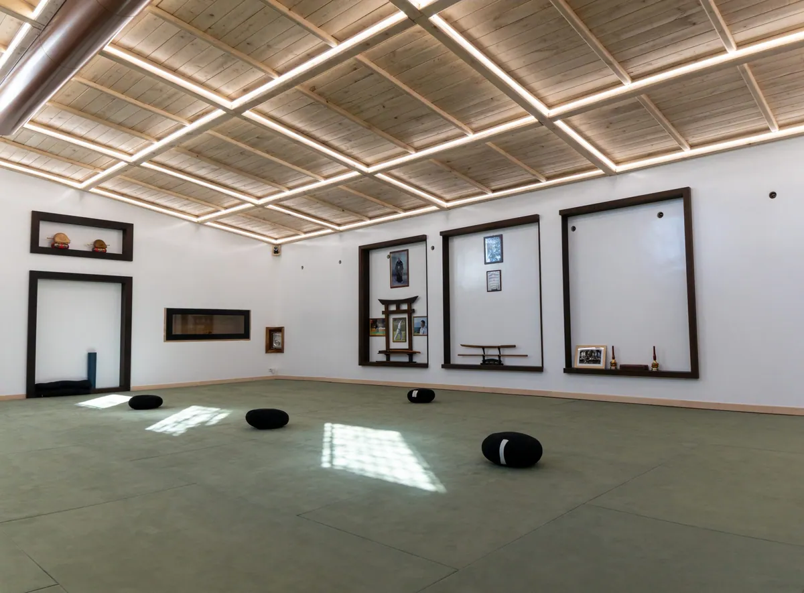

Le arti marziali non sono solo una disciplina fisica, ma un vero e proprio percorso di crescita interiore. Uno degli aspetti più importanti che caratterizzano la pratica all’interno di un dojo è l’etichetta, un insieme di regole di comportamento che hanno lo scopo di creare un ambiente rispettoso, armonioso e disciplinato. L’etichetta non è una semplice formalità, ma rappresenta il rispetto per il dojo, per il maestro, per i compagni e per se stessi. Seguire queste regole con dedizione aiuta a sviluppare autodisciplina, umiltà e una mentalità orientata all’apprendimento continuo.
L’Importanza del Saluto nel Dojo
Uno degli elementi più visibili dell’etichetta nelle arti marziali è il rei, ovvero l’inchino. Questo gesto non è solo un segno di cortesia, ma ha un significato più profondo: rappresenta rispetto e gratitudine. I praticanti eseguono il rei prima di entrare e uscire dal dojo, prima di iniziare un allenamento e alla fine di ogni sessione.
Il saluto varia a seconda della disciplina marziale e può essere fatto in piedi (ritsurei) o in ginocchio (zarei). Nel karate, ad esempio, il saluto viene accompagnato dall’espressione osu, che significa determinazione, resistenza e rispetto.
Il Dojo: Uno Spazio Sacro
Il dojo non è una semplice palestra, ma un luogo di apprendimento e crescita spirituale. Per questo motivo, deve essere trattato con il massimo rispetto. È consuetudine mantenere pulito l’ambiente, attraverso la pulizia del tatami e delle attrezzature da parte degli stessi allievi. Questo gesto ha una valenza simbolica: non si tratta solo di mantenere l’ordine, ma di prendersi cura dello spazio in cui si pratica e, indirettamente, di se stessi.
Un dojo ben curato riflette la disciplina e l’impegno di chi lo frequenta. Ogni praticante è responsabile di contribuire a mantenere l’ordine, riponendo correttamente le attrezzature e rispettando lo spazio di allenamento. Questa attenzione ai dettagli si traduce in un atteggiamento rispettoso anche al di fuori del dojo, nella vita quotidiana.

Il Ruolo del Sensei e il Rispetto Gerarchico
Un altro aspetto fondamentale dell’etichetta è il rispetto per il sensei (maestro) e per i compagni di allenamento. Il sensei non è solo un istruttore tecnico, ma una guida che trasmette valori e insegnamenti profondi. Per questo motivo, è importante seguire le sue istruzioni con attenzione e rispondere sempre con rispetto.
Anche il rapporto tra allievi segue una gerarchia basata sull’esperienza. Gli studenti più anziani (sempai) hanno il compito di guidare e aiutare i principianti (kohai), trasmettendo loro conoscenze e correggendoli con gentilezza. Questo sistema non è imposto per creare una rigida gerarchia, ma per favorire la crescita di tutti i praticanti, instaurando un clima di collaborazione e rispetto reciproco.
Comportamento Durante l’Allenamento
Durante l’allenamento, il comportamento deve essere sempre disciplinato e rispettoso. Alcune regole fondamentali includono:
Silenzio e concentrazione: Durante la lezione, è importante ascoltare attentamente le istruzioni del maestro e dei sempai. Parlare senza permesso o distrarsi dimostra mancanza di rispetto e disattenzione.
Eseguire i comandi con prontezza: Quando il sensei dà un’istruzione, gli allievi devono eseguirla immediatamente, senza esitazioni. L’atteggiamento proattivo è essenziale per il progresso nella pratica marziale.
Rispetto per il compagno di allenamento: Il dojo è un luogo in cui si cresce insieme. Durante l’esecuzione delle tecniche, bisogna sempre essere consapevoli della sicurezza propria e del compagno, evitando atteggiamenti aggressivi o irresponsabili.
Indossare correttamente il keikogi: Il keikogi (o gi) deve essere sempre pulito e in ordine, così come la cintura (obi). Un abbigliamento trasandato riflette una mancanza di rispetto per la disciplina.
Non voltare mai le spalle al maestro: Durante le spiegazioni o i saluti, è fondamentale mantenere una postura corretta e non dare mai le spalle al sensei come segno di rispetto.
L’Etichetta Oltre il Dojo
L’etichetta marziale non si limita alla pratica sul tatami, ma deve essere applicata nella vita quotidiana. La disciplina, il rispetto per gli altri e la ricerca dell’eccellenza sono valori che vanno coltivati anche al di fuori del dojo. E’ necessario dimostrare il proprio spirito marziale non solo in allenamento, ma anche nel modo in cui si affrontano le sfide della vita.
Molti grandi maestri sottolineano che le arti marziali non servono solo a imparare tecniche di combattimento, ma anche a forgiare il carattere. L’umiltà, la pazienza e la perseveranza sviluppate in anni di pratica aiutano ad affrontare le difficoltà con calma e determinazione.
L’etichetta nel dojo non è un insieme di regole rigide imposte senza motivo, ma un elemento essenziale per la formazione di un vero praticante di arti marziali. Attraverso il rispetto, la disciplina e la cura per i dettagli, ogni allievo può crescere non solo come praticante di arti marziali, ma anche come individuo.
Seguire queste tradizioni con consapevolezza significa onorare la storia e i valori delle arti marziali, mantenendo vivo uno spirito di rispetto e umiltà. Il dojo diventa così un luogo di apprendimento non solo fisico, ma anche morale, dove si costruisce una mentalità forte e consapevole.